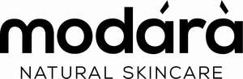

Trade Mark Journal No.2025/014 4 April 2025
UK00004156548 5 February 2025 (3,21,35)
Mark 1

Mark 2
- Class 3
- Lotions for face and body care; Body care cosmetics; Deodorants for body care; Exfoliants for the care of the skin; Body cleaning and beauty care preparations; Body moisturisers; Body and facial oils; Hair care creams; Body and facial creams [cosmetics]; Body lotions; Body creams; Moisturizing body lotions; Beauty creams for body care; Skin care cosmetics; Face and body creams; Hair care serum; Hair and body wash; Body and facial butters; Toning lotion, for the face, body and hands; Bath soap; Hand and body butter; Body butters; Body soap; Body deodorants; Body scrubs; Facial oils; Hair oils; Face and body lotions; Body washes; Face and body masks; Face masks; Face wash; Face scrub; Face oils; Facial serum for cosmetic use.
- Class 21
- Bath sponges; Body sponges; Abrasive sponges for scrubbing the skin; Bath brushes.
- Class 35
- Online retail store services relating to cosmetic and beauty products; Online retail services relating to cosmetics; Retail services in relation to hair products.
Odegua Mbonu
Modara Inc.